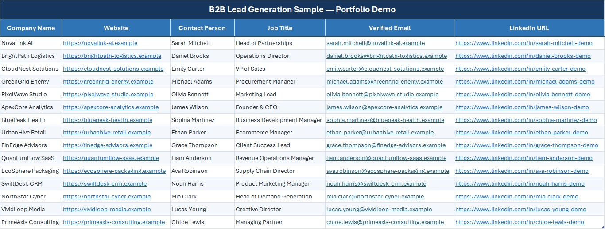
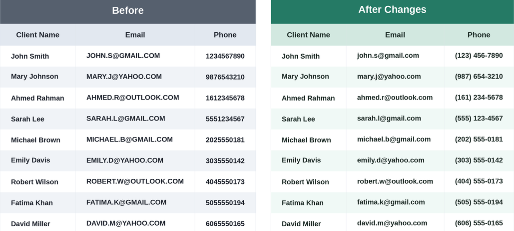

This B2B Lead Generation project demonstrates how business data can be researched, collected and organized into a structured spreadsheet for business use.
The information was carefully researched and organized to create a clean, accurate and easy-to-manage lead database that helps businesses identify and manage potential prospects efficiently.
The required business information was researched, collected and organized into a structured B2B lead list.
The completed lead list provides accurate and well-organized business data, making it easier to review, manage and use for potential business outreach.
The organized B2B lead list helps businesses save time by providing researched and structured business information in one place.
Clean and well-organized data makes it easier to review, manage and identify potential business prospects for outreach and sales activities.
A structured lead database provides a practical foundation for businesses to manage prospects efficiently and support their lead generation efforts.